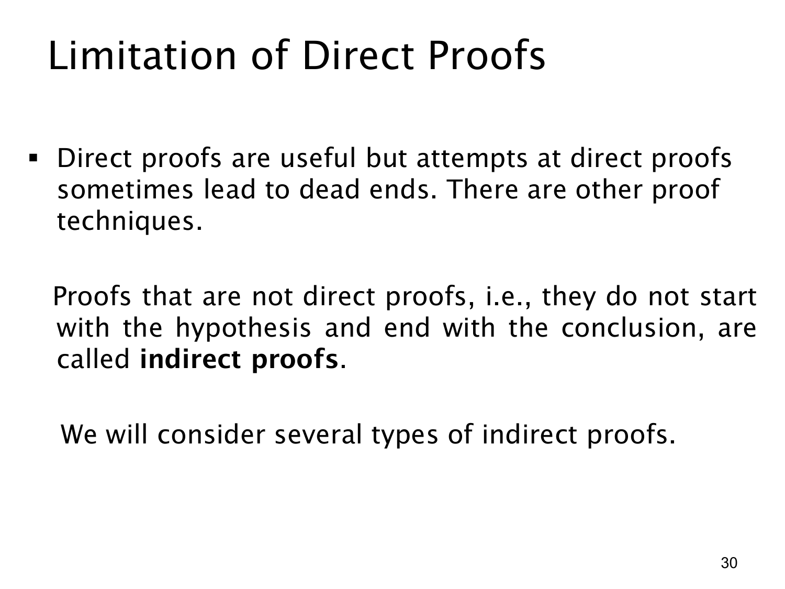

L1.3 · 第 30 页讲解原文
查看这一页课件

直接证明的局限与间接证明
前几页的直接证明都从命题的前件出发，按定义和代数规则一步步走到后件。例如从“r、s 都是有理数”出发，构造 r+s 的整数分式表示。这种路线很有用，但有时从前件开始推导会遇到无法自然接到后件的死路。
课件把不采用这种“从假设直接走向结论”路线的证明方法称为间接证明（indirect proof），并预告后面会介绍几种。选择间接证明，通常是因为命题的某种逻辑等价形式更容易处理。例如对 p→q，可以考虑等价的逆否命题 ¬q→¬p；也可以在适当的证明框架中假设目标结论不成立，再导出矛盾。
“直接证明走不通”只是说当前尝试没有找到合适的推导，不表示原命题为假。证明方法是组织有效论证的不同路径；无论使用哪一种，最终都必须根据合法的推理规则确立原命题，而不能因为推导困难就跳过关键步骤。